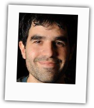
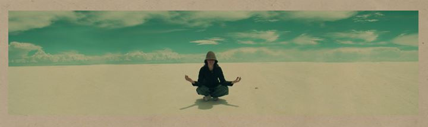
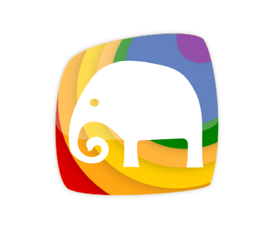
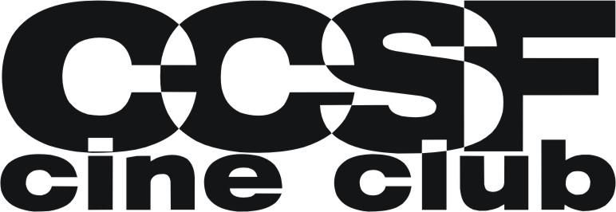
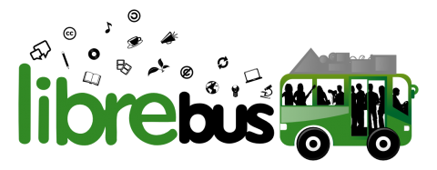
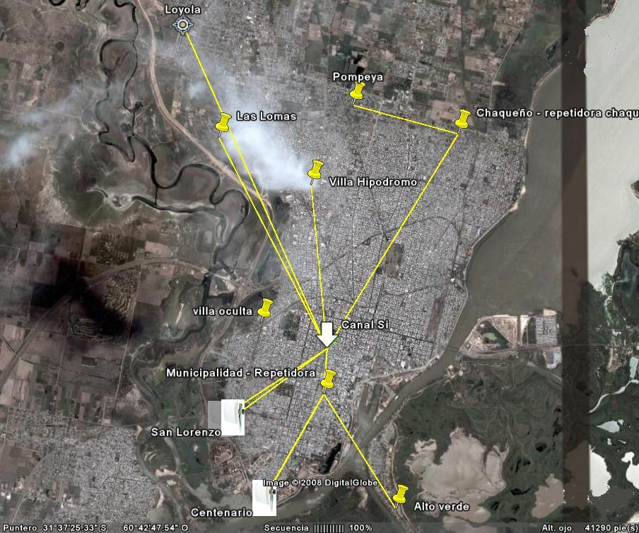
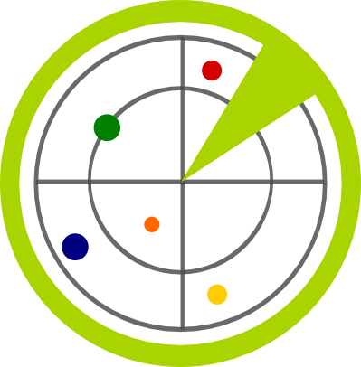
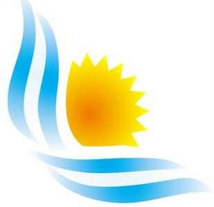

Presentación
¿quienes somos?
- ¿Qué hacemos acá?
- venimos a RADEAR!
- Antes de conocer al equipo...
- presentamos El jurado
Nos presentamos
el equipo
Cuasi Ingenieros
-

Ale Prieto
Cele Weidmann
Equipo
El director
-
Raúl Tschanz
Equipo
Tras bambalinas
El Cliente
-
Tere Sempere
Equipo
Tras bambalinas
La diseñadora
-

Juli Weidmann
LA historia
del radar
- contada en actos...
Primer acto
Ale va al teatro
- 
Segundo acto
Ale va al cine
- Python vi luz y entré
-

- 
Nada que ver con programación
Los Monty Python
De cómo se conoció el equipo...
- Conectividad
- el Software Libre
- la Cultura Libre
La Cooperativa
- 3 años de trabajo
- mucho aprendizaje
- proyectos divertidos
- amigos
- elección de vida
- muchas jornadas
- más de un radar
El contacto
con el cliente
La tere
- 
radar cultural
antes de ser radar
-
Ushahidi: plataforma que permite mapear información vital en zonas de catástrofe o de conflicto. Creada en Kenia para recibir denuncias de violencia durante la crisis postelectoral a principios de 2008.
mapa de conflictos 2008 - Kenia
Ushahidi y Kohana
- Proyecto iniciado y equipo diverso
-
Leo Arias - el servidor
Iván Qart - los plugins
Taringa - el dominio
- el merge no funcionó...
MST
nuestro proyecto anterior
"Sistema de Información de Gestión de Contenidos Educativos Multimedia sobre Redes MAN"
si, las redes MAN existen
- 
experiencia
aprendizaje
loops
la OVNIdireccional
antenas apuntando a ARSAT-1
aceptando el cambio
teníamos...
-

RADAR
un proyecto sin equipo
MST
un equipo sin proyecto
-
Radar Cultural
veamos como funciona
-
así no.
-
Espacios
*Listados según categorías seleccionadas
*visualizados según recorte del mapa
¿Como se hizo?
el marco de trabajo :: Scrum
Git
control de versiones
Desarrolladores
-
Leo Arias
Iván Qart
Colectivo Libre
Momento Nerd
MVC en Servidor y Cliente
Diseño Gráfico
-
Teresa Sempere
Colectivo Libre
Equipo
Tras bambalinas
Desarrolladores
-
Leo Arias
Iván Qart
Colectivo Libre
Como Seguimos...
Tras bambalinas
Diseño Gráfico
-
Teresa Sempere
Colectivo Libre
Equipo
Tras bambalinas
Desarrolladores
-
Leo Arias
Iván Qart
Colectivo Libre
Equipo
Tras bambalinas
Colaboradores
-
Taringa
CSL
Motivaciones
¿Por qué un Radar?
- [+] Ausencia de plataforma interactiva
- [+] Barreras para difundir eventos independientes
- [+] Democratizar la información
- [+] Redes de encuentro horizontal
- [+] Trabajo colaborativo
- [+] Alcance global
Equipo
Tras bambalinas
Diseño Gráfico
-
Teresa Sempere
Colectivo Libre
Equipo
Tras bambalinas
Desarrolladores
-
Leo Arias
Iván Qart
Colectivo Libre
Equipo
Tras bambalinas
Colaboradores
-
Taringa
CSL
Descripción
Manos a la obra
- [ Plataforma Web 2.0 ]
- [ Software Libre ]
- [ Eventos georreferenciados ]
- [ Filtros por categoría ]
- [ Promoción de eventos gratuita ]
- [ Feedback de eventos ]
- [ Verificación de eventos mediante denuncias ]
- [ Interacción con redes sociales ]
- [ Extensión progresiva del alcance territorial ]
- [ Banners publicitarios ]
Estimular la industria cultural es darle a todos los actores las mismas oportunidades, ¿qué mejor forma de hacerlo utilizando una herramienta colaborativa y libre?